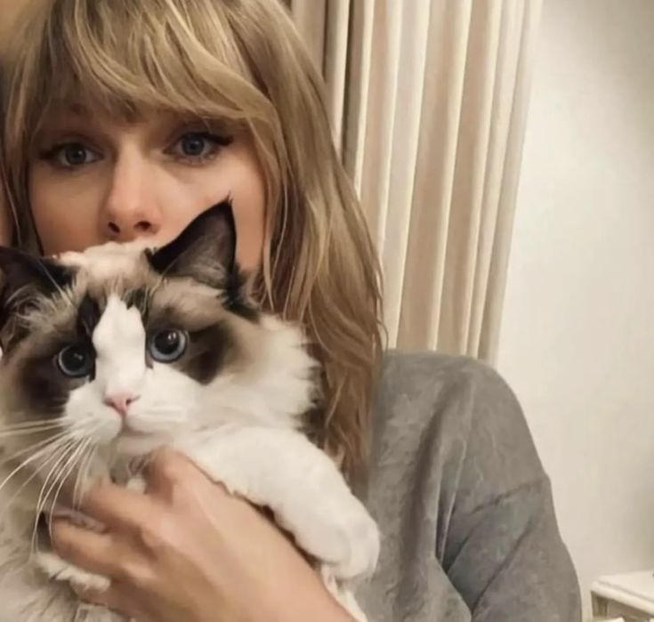

Historia

Taylor Swift es una actriz, cantautora, empresaria e influencer norteamericana. Arrancó su carrera artística siendo una niña y tanto su fama como reconocimiento mundial crecieron a la par. Es una referente del pop, el folk y el country.
Puedes visitar su wiki oficial aquí: Wiki Oficial de Taylor Alison Swift
Información
Habilidades
- Tiene la capacidad de plasmar experiencias reales en sus canciones, haciendo que su publico conecte con ella.
- Toca varios instrumentos, incluyendo guitarra, piano y bajo.
- Tiene buen rango vocal y control
- Sabe cocinar comidas deliciosas
- Tiene buena interpretación lírica y entrega emocional
Top 3 momentos épicos
- Interrupción de Kanye West en VMAs 2009
- Victoria en Grammy 2010
- Debut de Reputation en VMAs 2017
Ficha técnica
| Dato | Información |
|---|---|
| Edad | 36 años |
| Estatura | 1.83 m aprox. |
| Peso | 60kg |
| Primera aparición | fue el 1 de septiembre de 2006 en el Grand Ole Opry de Nashville, donde debutó con su sencillo "Tim McGraw" |
| Debilidades | Controversia frecuente, sus habilidades en el escenario son vistas como amateur, con movimientos rígidos que no compiten con artistas como Beyoncé o Ariana Grande |
| Alias | Actualmente no usa alias como otros artistas. |
Registro de swifty fans
Galería
.jpg)
